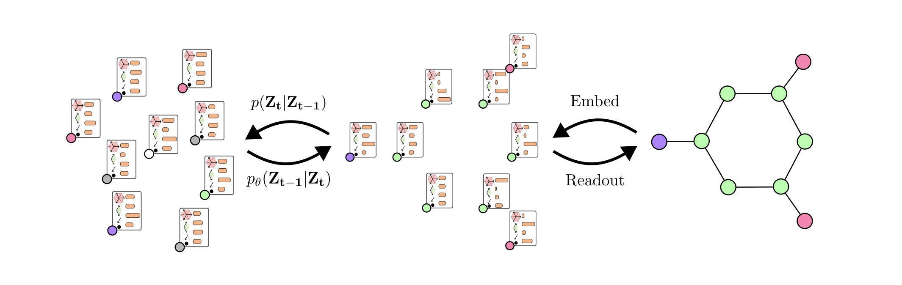
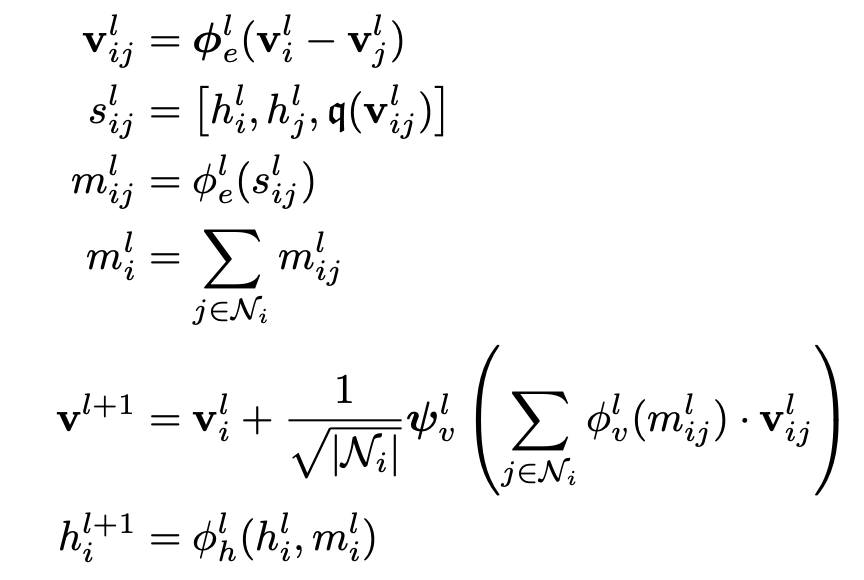
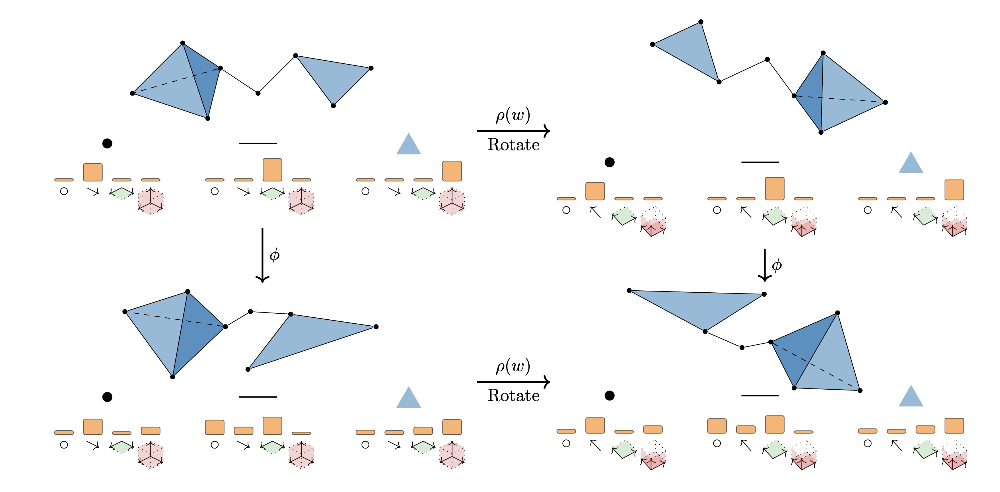

|
Cong Liu (刘聪)
I am a second year PhD candidate at AMLab and AI4Science Lab at University of
Amsterdam. My PhD project is about using deep learning tools for protein stabilization and peptide
design. I work with Dr.Patrick
Forré. I also collaborate with Janssen Vaccine Design.
Prior to that, I obtained my Master's degree from University College London in Data Science and
Machine Learning, and Bachelor's joint degree from UESTC (电子科技大学) and University of Glasgow in
Communication Engineering.
Email /
Google Scholar
/
Github
|
|
|
News
[Apr 2025] Our paper on Clifford Diffusion Models was accepted by ICLR 2025 FPI workshop.
[Dec 2024] I will be joining ByteDance Seed AI4Science team as a research scientist intern!
[Aug 2024] I am happy to give a presentation related to Clifford Neural Nets and Message Passing
Simplicial Networks at AGACSE2024.
[Jun. 2024] Our paper on Faster and Better Clifford GNNs was accepted by ICML 2024 GRaM workshop.
[Feb. 2024] Our paper "Clifford Group Equivariant Simplicial Message Passing Networks" was accepted
by ICLR 2024!
|
|
Research
I'm interested in AI4Science, Machine Learning, Geometric Deep Learning, Protein Engineering,
Generative Modelling and Efficient Deep Learning.
|
|

|
Clifford Group Equivariant Diffusion Models For 3D Molecular Generation
Cong Liu*,
Sharvaree Vadgama*,
David Ruhe,
Erik Bekkers,
Patrick Forré,
ICLR, FPI workshop, 2025
paper /
This paper presents diffusion models applied on Clifford grades for molecular generation.
|
|

|
Multivector Neurons: Better and Faster O(n)-Equivariant Clifford Graph Neural Networks
Cong Liu,
David Ruhe,
Patrick Forré,
ICML GRaM workshop,2024
paper /
code
This paper focuses on faster and performance-wise better Clifford GNNs.
|
|

|
Clifford Group Equivariant Simplicial Message Passing Networks
Cong Liu*,
David Ruhe*,
Floor Eijkelboom,
Patrick Forré,
ICLR, 2024
paper /
code
This paper proposes a general framework that considers both topological and geometric informatiom
in general geometric graphs by leveraging Clifford group equivariant networks and simplicial message
passing networks.
|
|
{kind=link}